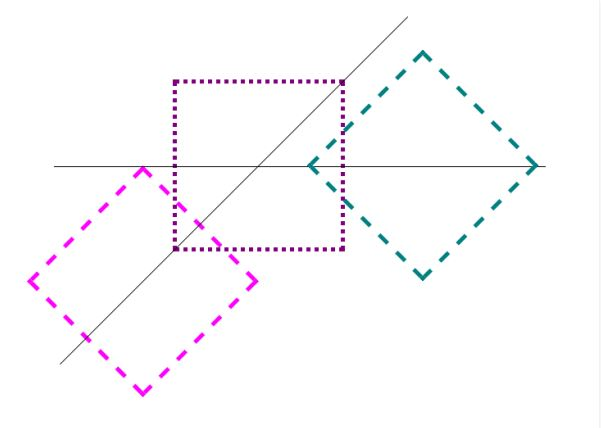

Week 8 Notes
HTML5 & CSS3 for the Real World
Chapter 8: Transforms & Transitions
Nowadays, CSS3 can handle certain tasks without JS needing to be written. It comes with features like tilt, scale, move, and flip.
- Transform is a CSS3 property that lets you translate, rotate, scale, and/or skew any element on the page
- An element's appearance can be manipulated using the transform functions
- The value of the transform property is one or more transform functions that are applied in the order they're provided
- Translation is one of the transform functions, and it allows you to move elements left, right, up, or down
- transform: translate(45px, -45px);
- Transforms require specific prefixing from the browser in order to work
- To make code work, you would need to include some special code

- When transforming an element, only declare transform once (the cascade would have the last transform declaration override
- Translation is one of the transform functions, and it allows you to move elements left, right, up, or down
- transform: translate(45px, -45px);
- When using translation, you're moving elements without impacting the flow of the document
- Unlike "position: relative" (position an element either against its current position, a parent, or other ancestor), translation can only move relative to the current position
- You can use different code for when you only want to translate in one direction (either horizontally or vertically)
- transform: translateX(45px); transform: translateY(-30px);
- The scale function scales an element through arguments in the parameters
- scale(x,y) takes the defined factors and scales horizontally, then vertically
- If only one value is provided, it will scale the element while maintaining the original aspect ratio
- Much like translation, you can scale based on only vertical or horizontal direction
- scaleX(x) or scaleY(y)
- Scaling will only grow outwards from or shrink towards the element's cycle
- This default behavior can be changed if you use "transform-origin"
- Scaling also has no impact on document flow
- scale(x,y) takes the defined factors and scales horizontally, then vertically
- The rotate function rotates an element around the point of origin by a specified angle value
- The default point of origin is the element's center
- You can define an angle value with degrees, grads, radians, or turns, but you generally use degrees
- transform: rotate(40deg)
- The skew(x,y) function specifies a skew along the x and y axes
- X skews on the x axis, and Y skews on the y axis, and if the second parameter is omitted, the skew will only occur on the x axis
- transform: skew(15deg, 4deg)
- This results in the following example
- Skewed Example
- X skews on the x axis, and Y skews on the y axis, and if the second parameter is omitted, the skew will only occur on the x axis
- The origin of the transform can be changed from the default (center of the element) to something else using transform-origin
- It looks like this:
- transform-origin: 10% 10%;
- Browser support for transform-origin is the same for transform
- It looks like this:
- Be careful when choosing your order of transform functions
- If you decide to rotate an element before translating, it will look differently than if you would translate before rotating
- Here's an example from the textbook
- 
- The rightmost square - transform: translateX(200px) rotate(135deg);
- The leftmost square - transform: rotate(135deg) translateX(200px);
- Transitions allow values of CSS properties to change over time, providing simple animations
- If a link changes color on hover, you can make it gradual through the transition property
- If it's not supported by the browser, the change will be immediate, which is still okay
- CSS transitions are declared along with the regular styles on an element
- Here are the steps to create a simple transition using only CSS:
- Declare the original state of the element in the default style declaration
- Declare the final state of your transitioned element; for example, a :hover state
- Include the transition functions in your default style declaration using the transition properties, which include...
- transition-property
- transition-duration
- transition-timing-function
- transition-delay
- Note that transition is declared in the default or originating state
- If a link changes color on hover, you can make it gradual through the transition property
- There are 4 properties that you can address with transition
- transition-property is necessary as it selects what CSS rule you want to apply the transition to
- transition-duration sets how long the transition will take for the element to go from its original state to its transitioned state
- transition-timing-function sets the speed at which the transition takes place, which can be anything ranging from starting slow and ending fast to starting fast and ending slow
- transition-delay sets how long the transition is delayed before it starts
- Note that you can use a negative delay for specific effects that require the transition to jump to a different part of the transition
- The transition property is shorthand for these properties
- transition: transform 0.2s ease-out 50ms;
- It can be in any order
- However, if you include a delay, a duration must precede it
- Unlike transitions, CSS animations let you control each step of an animation via keyframes
- You can define keyframes and then use them later on
- @keyframes appearDisappear { 0%, 100% { opacity: 0; } 20%, 80% { opacity: 1; } }
- You can attach the animation to the "animation-name" property
- animation-name: appearDisappear;
- Similarly to transition, animation has a duration property and timing function and delay
- It also has other features like "animation-direction" and "animation-iteration-count"
- "animation" is its own shorthand as well
- animation: 300ms ease-in alternate 5s backwards appearDisappear;
- Be careful with naming your animation-name as using animation property key terms like "forwards", "running", or "alternate" can cause issues
- You can define keyframes and then use them later on
- Both transition and animation can be grouped with multiple of their own calls
- You separate with a comma
- transition: transform 0.2s ease-out 50ms, color 0.1s linear 50ms;
- You can do the same thing with animations
- animation: animationOne 300ms ..., animationTwo 600ms ...;
- You separate with a comma
Definitions
- :
Questions
- First question